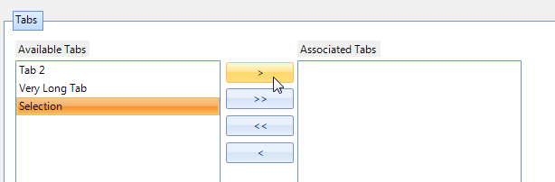

Managing Contextual Tab Groups
Using the Designer to Add Contextual Tab Groups
You can add contextual tab groups to __RadRibbonBar__using the designer in either of the following two ways:
1. Using in-place editing: Click on Add New Group, type in the desired name for the contextual tab group, and press Enter.
2. Using the collection editor: Select the ContextualTabGroups property of RadRibbonBar and open the property collection editor. In the collection editor, click Add. In the contextual tab group Text property, enter the desired name for the contextual tab group and then click OK.
Using the Designer to Assign Tabs to a Contextual Tab Group
You can assign tabs to contextual tab groups using the designer in either of the following two ways:
1. Using drag-and-drop: Click on the tab that you want to be placed in a particular contextual tab group and then drag it to the desired contextual tab group.
2. Select a Contextual Tab Group and open the __Properties__window of Visual Studio. Find the __TabItems__property and open its Collection Editor. You will see the available Ribbon Tabs which can be placed in the Contextual Tab Group. Use the controls on the dialog to place tabs in the group:
Using Contextual Tabs programmatically
The following code snippet shows how to add contextual tab groups and assign tabs to them programmatically:
[C#] Creating ContextualTabGroups
private Telerik.WinControls.UI.RibbonTab ribbonTab1;
private Telerik.WinControls.UI.RibbonTab ribbonTab2;
private Telerik.WinControls.UI.RibbonTab ribbonTab3;
private Telerik.WinControls.UI.RibbonTab ribbonTab4;
private Telerik.WinControls.UI.RibbonTab ribbonTab5;
private Telerik.WinControls.UI.ContextualTabGroup contextualTabGroup1;
private Telerik.WinControls.UI.ContextualTabGroup contextualTabGroup2;
void Form1_Load(object sender, EventArgs e)
{
// The "this" variable refers to the form that contains the ribbonbar
// Declare variables for tabs and contextual tab groups
//Create the tabs
this.ribbonTab1 = new Telerik.WinControls.UI.RibbonTab();
this.ribbonTab2 = new Telerik.WinControls.UI.RibbonTab();
this.ribbonTab3 = new Telerik.WinControls.UI.RibbonTab();
this.ribbonTab4 = new Telerik.WinControls.UI.RibbonTab();
this.ribbonTab5 = new Telerik.WinControls.UI.RibbonTab();
ribbonTab1.Text = "Tab one";
ribbonTab2.Text = "Tab two";
ribbonTab3.Text = "Tab three";
ribbonTab4.Text = "Tab four";
ribbonTab5.Text = "Tab five";
// Create the contextual tab groups
this.contextualTabGroup1 = new Telerik.WinControls.UI.ContextualTabGroup();
this.contextualTabGroup2 = new Telerik.WinControls.UI.ContextualTabGroup();
// Add the command tabs to the ribbon bar's command tabs collection by accessing the
// ribbon bar's CommandTabs property and using its AddRange method
this.radRibbonBar1.CommandTabs.AddRange(new Telerik.WinControls.UI.RibbonTab[] { ribbonTab1, ribbonTab2, ribbonTab3, ribbonTab4, ribbonTab5 });
// Add the contextual tab groups to the ribbon bar's contextual tab groups collection by
// accessing the ribbon bar's ContextualTabGroups property and using its AddRange method
this.radRibbonBar1.ContextualTabGroups.AddRange(new Telerik.WinControls.RadItem[] { this.contextualTabGroup1, this.contextualTabGroup2 });
//Assign some tabs to the contextual tab groups.
this.contextualTabGroup1.TabItems.Add(this.ribbonTab1);
this.contextualTabGroup1.TabItems.Add(this.ribbonTab2);
this.contextualTabGroup2.TabItems.Add(this.ribbonTab3);
this.contextualTabGroup2.TabItems.Add(this.ribbonTab4);
}
[VB.NET] Creating ContextualTabGroups
' The "Me" variable refers to the form that contains the RibbonBar
' Declare variables for tabs and contextual tab groups
Private RibbonTab1 As New Telerik.WinControls.UI.RibbonTab()
Private RibbonTab2 As New Telerik.WinControls.UI.RibbonTab()
Private RibbonTab3 As New Telerik.WinControls.UI.RibbonTab()
Private RibbonTab4 As New Telerik.WinControls.UI.RibbonTab()
Private RibbonTab5 As New Telerik.WinControls.UI.RibbonTab()
Private ContextualTabGroup1 As New Telerik.WinControls.UI.ContextualTabGroup()
Private ContextualTabGroup2 As New Telerik.WinControls.UI.ContextualTabGroup()
Private Sub ManagingContextualTabGroups_Load(ByVal sender As System.Object, ByVal e As System.EventArgs) Handles MyBase.Load
RibbonTab1.Text = "Tab one"
RibbonTab2.Text = "Tab two"
RibbonTab3.Text = "Tab three"
RibbonTab4.Text = "Tab four"
RibbonTab5.Text = "Tab five"
'Add the tabs to the ribbon bar
Me.RadRibbonBar1.CommandTabs.AddRange(New Telerik.WinControls.UI.RibbonTab() {Me.RibbonTab1, Me.RibbonTab2, Me.RibbonTab3, Me.RibbonTab4, Me.RibbonTab5})
'Add the contextual tab groups to the ribbon bar
Me.RadRibbonBar1.ContextualTabGroups.AddRange(New Telerik.WinControls.RadItem() {Me.ContextualTabGroup1, Me.ContextualTabGroup2})
'Associate the groups with some tabs
Me.ContextualTabGroup1.TabItems.Add(Me.RibbonTab1)
Me.ContextualTabGroup1.TabItems.Add(Me.RibbonTab2)
Me.ContextualTabGroup2.TabItems.Add(Me.RibbonTab3)
Me.ContextualTabGroup2.TabItems.Add(Me.RibbonTab4)
End Sub